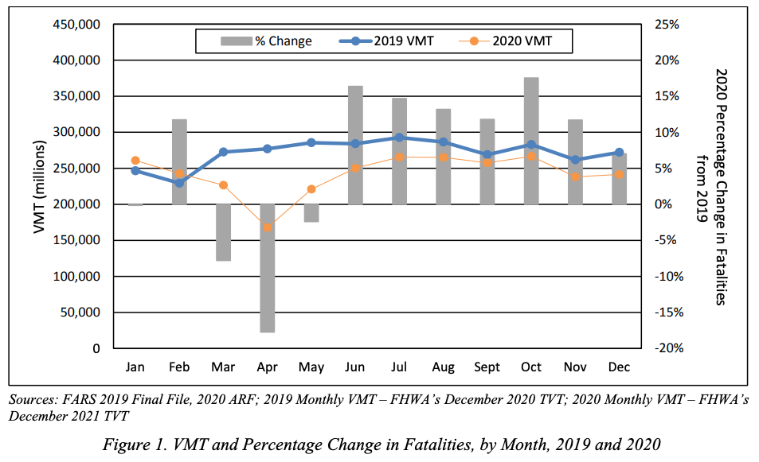

Internal versus External Validity#
It is at this point I have to come clean about having employed a… small indirection. At the top of this reading, I introduced the idea that answering Exploratory Questions boiled down to creating (1) understandable summarizations (2) of meaningful patterns, and (3) ensuring those summaries faithful represent the data. But that three-part objective is actually only one-half of answering an Exploratory Question. More specifically, those are the three components of ensuring high internal validity when answering an Exploratory Question. But to generate a truly useful answer to an Exploratory Question, your analysis must also have high external validity.
Essentially, internal validity is a measure of how well you have analyzed the data you have, while external validity is how well you expect the answer you generated from that data to generalize to your stakeholder’s context. Internal and external validity arise when answering any data science question, and so these two concepts are ones that we will return to time and again in this book.
While the idea of internal validity will feel familiar to anyone who has taken a statistics of machine learning course, external validity is often less discussed in the classroom. This is not because it is less important than internal validity. One reason for this is that it is harder to evaluate external validity using statistical methods, causing some instructors to think of it as “outside the scope” of a statistics course. But the second reason I suspect this occurs is more subtle: while a given analysis may be said to have good or bad internal validity, it cannot be said to have good or bad external validity. Rather, the external validity of a study must always be evaluated with respect to a specific context to which one wishes to generalize the findings.
This means that external validity is different from internal validity in an important way: when faced with the same facts about a study, everyone should generally agree on the internal validity of a study, but the external validity of a study really depends on how you want to use the results. A study of medical care provided to Duke undergraduates may have very good external validity with respect to undergraduate students at Emory, UNC, Vanderbilt, and other elite universities with associated research hospitals (that is, the conclusion of the study of Duke students is likely to also be valid for those other students). But that same study may have poor external validity with respect to lower income students attending community colleges that have less comprehensive student health insurance and no top-tier associated hospital system. And it would certainly have terrible external validity with respect to all Americans, never mind people living in other countries.
Interval v. External Validity: An Example#
To illustrate what is meant by these terms, suppose you’ve been hired by a car manufacturer. Through extensive market research, they have determined that if they can improve the safety of their cars, they could dramatically improve the image of their brand. They have turned to you, their in-house data scientist, to help them determine what safety enhancements they should focus on developing.
To help them prioritize their efforts, you decide it would be useful to begin by better understanding the predominant causes of major accidents. After all, if 95% of accidents were caused by mechanical failures, bad weather, and drunk drivers, then even a perfect system for preventing drowsy driving accidents could only reduce accidents by 5% at best![1]
The best source of accident investigations of which you are aware is the US National Highway Traffic Safety Administration’s National Center for Statistics and Analysis (NCSA). Using their Crash Reporting Sampling System, the NCSA collects and publishes data from “nationally representative sample of police-reported traffic crashes, which estimates the number of police-reported injury crashes and property-damage-only crashes in the United States,” as well as data on all fatal accidents collected through their Fatality Analysis Reporting System.
The NCSA provides you with data on police-reported accidents from the Crash Reporting Sampling System and all fatal accidents from the Fatality Analysis Reporting System from the past 5 years (2018-2023). As you turn to using this data to analyze the causes of severe accidents for your stakeholder, what internal and external validity concerns might you have in the back of your mind?
Internal Validity Concerns#
Internal validity concerns, in this context, relate to your ability to properly characterize the causes of severe accidents in this data. The first of these concerns are those discussed in our previous two readings — namely, whether the summarizations of accident causes you generate from this data are meaningful and faithful representations of the patterns in the data.
But internal validity concerns also extend to things like concerns over the accuracy with which things are measured. For example, it’s reasonable to ask “How well do police accident reports capture the true causes of an accident?” Some factors — like whether a driver was intoxicated — are easy to verify after the fact in major accidents. Other factors, however, may have contributed to accidents — and be easier to address with driver assistance systems — but may have been too hard to verify for the police to put in their reports. For example, maybe weak headlights prevented the driver from seeing a change in the speed limit (causing the documented cause of the accident: speeding). Or perhaps one driver was unable to see an approaching vehicle on a cross street due to width of the A-piller (that piece of metal running vertically between the front windshield and front side window). Or “weather” may be invoked as a cause in an accident when what was really at play was that the driver had the wipers on too low of a setting (and automatic wipers would have adjusted more quickly, preventing the accident).
All of these are question about whether our summarization of the data provides a proper characterization of the world for the period and group we think are covered.
External Validity Concerns#
But worrying about whether we really understand the world covered by our data is only half the battle. After all, our stakeholders aren’t planning to go back in time 5 years and add a new driver safety system to their cars starting in 2018; they’re thinking of developing this safety system to use in the future. So what do we think is the external validity of findings from 2018-2023 to the next ten years?
To answer this question, we need to consider how the next ten years might differ from the last five in ways that are relevant to the phenomenon we care about (here, the causes of car accidents).
First, since time will have passed between when the crash data was collected and when the new feature rolls out, one might reasonably assume that trends in accident causes during the 2018-2023 period are likely to continue. In light of that, a thoughtful data scientist may wish to pay extra attention to whether there are clear trends in accident causes, and in what direction they are trending.
But one might also pause to ask whether there was anything exceptional about the “data generating process” during the 2018-2023 period that would not obtain in later years. Something like… a pandemic?
And indeed, one would be right to worry. The figure below shows Vehicle Miles Travelled (VMT) and Fatalities in 2019 (pre-pandemic) and 2020 (the pandemic began in force in March, if you’ve forgotten). As the figure shows, driving plummeted during this period, and so too did Fatalities.

Source: Taken from the US Department of Transportation NHTSA’s Overview of Motor Vehicle Crashes in 2020
Given that, a thoughtful data scientist may wish to be sure that any patterns identified in this five-year period are robust to exclusion of 2020-2022 before making any predictions about the likelihood these patterns would persist in later years.
Other Contexts#
The preceding discussion assumed an interest in US accidents, but of course most car companies that sell cars in the US also sell cars in Asia and Europe. The issues raised above are examples of what I would contend are relatively small threats to the external validity of findings based on data from 2018-2023 with respect to near-future US accidents (at least provided the patterns aren’t driven by the pandemic period).
But external validity to Asian or European markets would be a much bigger concern. Because traffic laws, speed limits, alcohol laws, and how roads are constructed and laid out are all very different in different regions of the world, it seems quite unlikely that patterns identified in US accident data would have much external validity to Asian or European auto markets.
Conclusion#
Internal and External Validity are both key concepts for being an effective data scientist, and they are concepts to which we will return regularly in this book. Moreover, they are goals that are sometimes in tension — the more control one has over a study context, the more likely one is to have good Internal Validity; but that control can often create an artificiality to limits External Validity. Thus Internal and External Validity should not necessarily be thought of as things to try and simultaneously maximize at all costs; rather, they are best thought of as distinct features of any analysis that should always be considered. I would also add that, of the two, I would argue that External Validity — while not more important in and of itself — is the more often overlooked.
Reading Reflection Questions#
Why is the External Validity of a study only defined with respect to a given context?
A group of Duke doctors wishes to understand exercise behavior in patients who have recently experienced cardiac surgery. To measure exercise behavior, they surveyed their patients post-surgery about their exercise behavior. But one doctor on the team is concerned that people may mis-report their exercise (the patients know they’re supposed to be exercising, so the doctor is concerned they will report they are exercising even if they are not). Is this an Internal or External Validity concern?
After these Duke doctors published their results, word of the study reached a doctor in rural Louisiana. Looking at the study, however, she found that the patients treated by the Duke doctors tended to be younger and healthier than the patients she sees. Is this an Internal or External Validity concern?